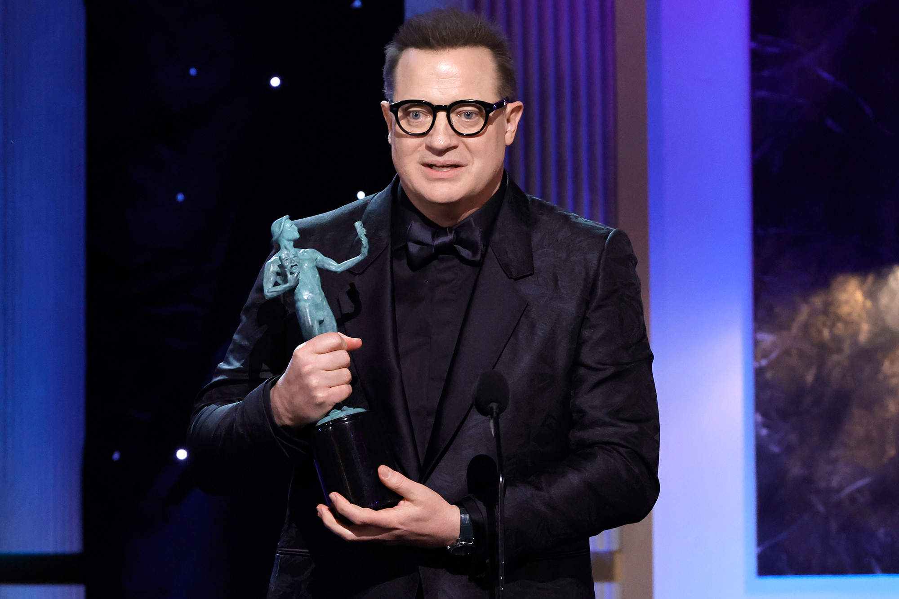
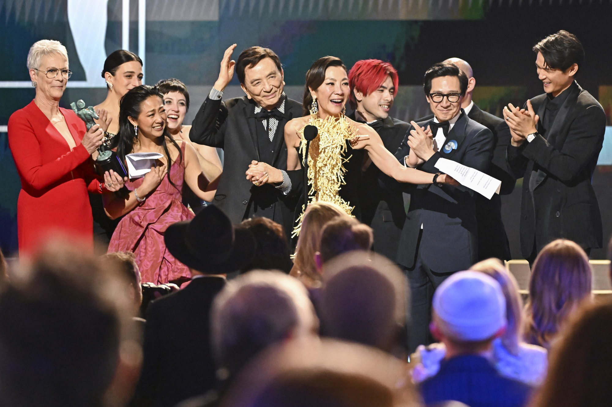
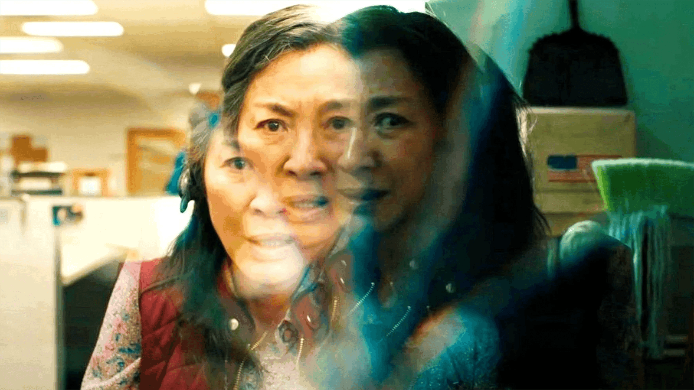
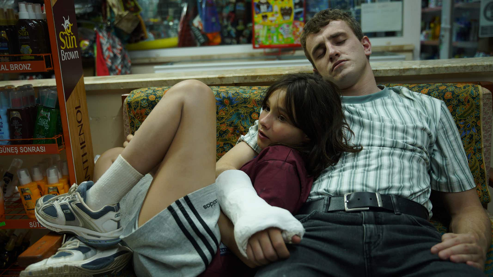
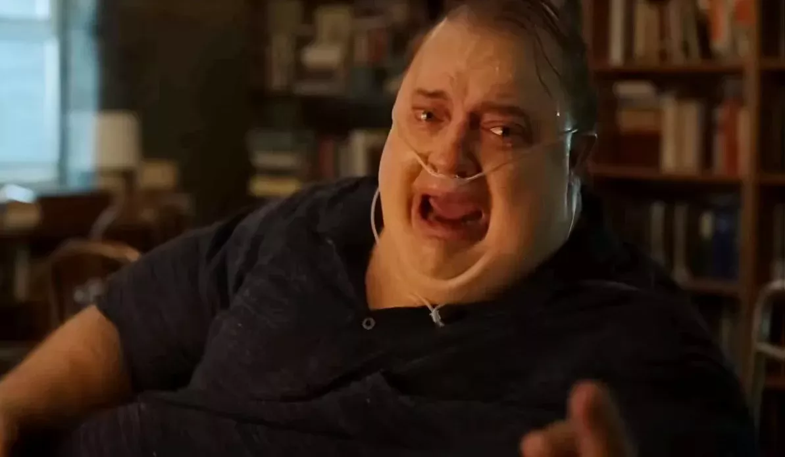
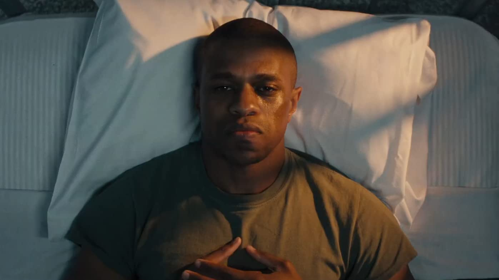
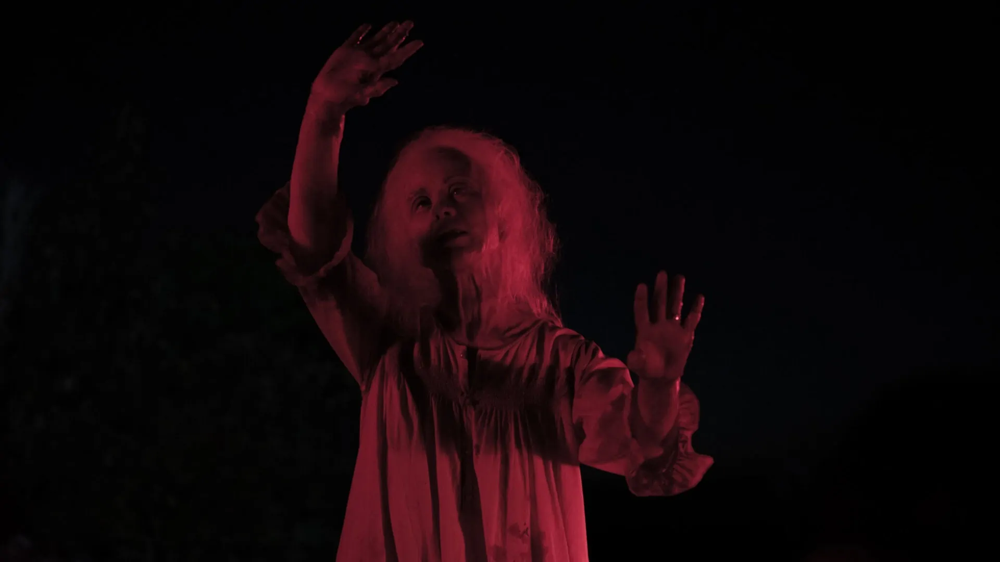
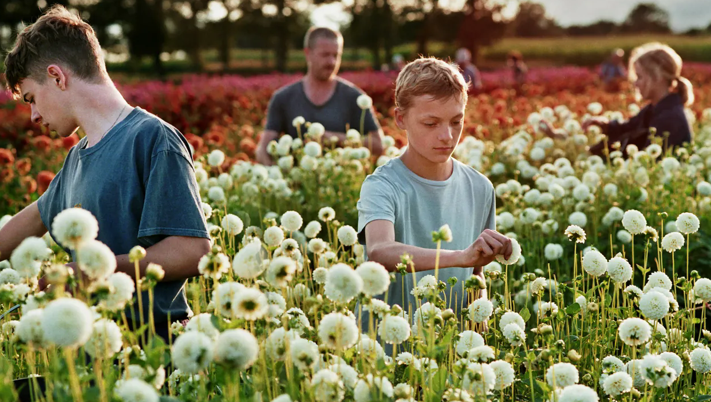

For Your Consideration
Recent News


1.
Brendan Fraser wins the SAG award for best lead actor for his performance in The Whale.
2.
Everything Everywhere All At Once becomes the most awarded film in SAG history, taking home 4 awards including ensemble.
3.
Charlotte Wells is awarded the BAFTA for debut british writer, director, or producer for her work on Aftersun
Films For Consideration
Everything Everywhere All At Once
The universe is so much bigger than you realize
for consideration in all categories including best picture
"To say this is a showcase for Michelle Yeoh's talent almost feels like an understatement"
Clarisse Loughry
The Independent
"Daniels spin the tedium of laundry and taxes into an apocalyptic war against the spirit of nihilism"
David Ehrlich
IndieWire

The father she knew and the man she didn't
for consideration in all categories including best actor
"Mescal reveals without showing, communicating with us in a language that goes beyond words, or even a glance"
Stephanie Zacharek
Time Magazine
"A work of masterful and ubearable melancholy"
Alison Willmore
Vulture

Aftersun
One last chance at redemption
for consideration in all categories including best actor
"One of the best performances of the year in one of the best movies of the year"
Richard Roeper
Chicago Sun Times
"[Fraser's] Charlie is complex, flawed, funny, and otherwise fully and radiantly human"
Robbie Collin
The Telegraph

The Whale
Everybody loves Marcel
for consideration in all categories including animated feature
"Funny, profound, weird, sad, and gorgeously constructed"
John Nugent
Empire
"Purely joyful, stealthily profound"
Leah Greenblatt
Entertainment Magazine
Marcel The Shell With Shoes On
The search for success in an unjust system
for consideration in all categories including best actor
"One of the most stirring protraits of black masculinity since Moonlight"
David Rooney
The Hollywood Reporter
"Pope gives a career-igniting performance"
Peter Debruge
Variety

The Inspection
Dying to show you a good time
for consideration in all categories including makeup and hairstyling
"A clever and exuberant throwback to a less innocent time"
A.O. Scott
The New York Times
"Tremendous misdirects, effective jump scares, and literal piles of gore"
Nikki Baughan
ScreenDaily

X
An intimate rift
for consideration in all categories including international feature
"[A] beautiful but bittersweet reflection on the getting of wisdom at its toughest and most painful"
Ann Hornaday
The Washington Post
"Superbly acted, and beatifully filmed"
John Bleasdale
CineVue

Close